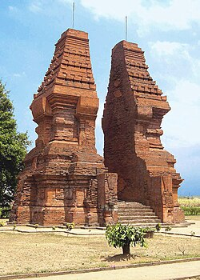
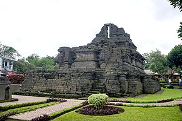
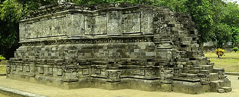

| NO |
FOTO |
OBYEK WISATA |
DESKRIPSI |
| 1. |
 |
Candi Bajang Ratu |
Gapura Bajang Ratu atau juga dikenal dengan nama Candi Bajang Ratu adalah sebuah gapura / candi peninggalan Majapahit. Bangunan ini diperkirakan dibangun pada abad ke-14 dan adalah salah satu gapura besar pada zaman keemasan Majapahit. Menurut catatan Badan Pelestarian Peninggalan Purbakala Mojokerto, candi / gapura ini berfungsi sebagai pintu masuk bagi bangunan suci untuk memperingati wafatnya Raja Jayanegara yang dalam Negarakertagama disebut "kembali ke dunia Wisnu" tahun 1250 Saka (sekitar tahun 1328 M). |
| Desa Temon, Kecamatan Trowulan, Kabupaten Mojokerto, Jawa Timur |
2. |
 |
Candi Wringinlawang |
Candi Wringinlawang adalah sebuah gapura peninggalan kerajaan Majapahit abad ke-14. Bangunan ini terletak tak jauh ke selatan dari jalan utama di Jatipasar. Gapura agung ini terbuat dari bahan bata merah dengan luas dasar 13 × 11 meter dan tinggi 15,5 meter. Diperkirakan dibangun pada abad ke-14. Gerbang ini lazim disebut bergaya candi bentar atau tipe gerbang terbelah. |
| Jatipasar, Kecamatan Trowulan, Kabupaten Mojokerto, Jawa Timur |
| 3. |
 |
Candi Brahu |
Merupakan salah satu candi yang terletak di dalam kawasan situs arkeologi Trowulan, bekas ibu kota Majapahit. Candi Brahu dibangun dengan batu bata merah, menghadap ke arah barat dan berukuran panjang sekitar 22,5 m, dengan lebar 18 m, dan berketinggian 20 meter. Dalam prasasti yang ditulis Mpu Sendok bertanggal 9 September 939 (861 Saka), Candi Brahu disebut merupakan tempat pembakaran (krematorium) jenazah raja-raja. Akan tetapi, dalam penelitian tak ada satu pakar pun yang berhasil menemukan bekas abu mayat dalam bilik candi. Hal ini diverifikasi setelah dilakukan pemugaran candi pada tahun 1990 hingga 1995. |
| Dukuh Jambu Mente, Desa Bejijong, Kecamatan Trowulan, Kabupaten Mojokerto, Jawa Timur |
| 4. |
 |
Candi Tikus |
Candi Tikus adalah sebuah peninggalan dari kerajaan yang bercorak Hindu yang terletak di Kompleks Trowulan. Bangunan Candi Tikus menyerupai sebuah petirtaan berupa sebuah kolam dengan beberapa bangunan di dalamnya. Hampir seluruh bangunan berbentuk persegi empat dengan ukuran 29,5 m × 28,25 m ini terbuat dari batu bata merah. Sebagian pakar berpendapat bahwa candi ini merupakan petirtaan (tempat pemandian keluarga raja), tetapi sebagian pakar yang lain berpendapat bahwa bangunan tersebut merupakan tempat penampungan dan penyaluran air untuk keperluan penduduk Trowulan. Namun, menaranya yang berbentuk meru menimbulkan dugaan bahwa bangunan candi ini juga berfungsi sebagai tempat pemujaan. |
| Dukuh Dinuk, Desa Temon, Kecamatan Trowulan, Kabupaten Mojokerto, Jawa Timur |
| 5. |
 |
Candi Jabung |
Candi Jabung adalah salah satu candi Hindu peninggalan kerajaan Majapahit. Candi ini berjarak hanya sekitar 5 km dari Kecamatan Kraksaan atau 500 meter sebelah tenggara kolam renang Jabung Tirta yang berada di pinggir jalan raya Surabaya - Banyuwangi. Struktur bangunan candi yang hanya dari bata merah ini mampu bertahan ratusan tahun. Menurut keagamaan, Agama Buddha dalam kitab Nagarakertagama Candi Jabung di sebutkan dengan nama Bajrajinaparamitapura. |
| Desa Jabung, Kecamatan Paiton, Kabupaten Probolinggo, Jawa Timur |
| 6. |
 |
Candi Singasari |
Candi Singasari merupakan candi Hindu-Buddha peninggalan bersejarah dari Kerajaan Singasari. Candi ini merupakan tempat pendharmaan bagi raja Singhasari terakhir, yaitu Kertanegara, yang meninggal pada tahun 1292 M. Candi ini berada di lembah di antara Pegunungan Tengger dan Gunung Arjuno pada ketinggian 512m di atas permukaan laut. Bangunan candi utama dibuat dari batu andesit, dibangun dengan bentuk menyerupai limas, batu disusun dari bawah hingga ke atas lalu dipahat dengan bagian atas lebih kecil dari bagian bawah candi. Bagian-bagian candi memiliki fungsi yang memiliki arti tersendiri. Batur (pondasi), kaki candi, tubuh candi dan atap memiliki fungsi yang berbeda-beda kegunaannya. |
| Kelurahan Candirenggo, Kecamatan Singosari, Kabupaten Malang, Jawa Timur |
7. |
 |
Candi Jago |
Candi Jago berlatar agama Buddha Tatrayana. Menurut kitab Negarakertagama pupuh 41:4 dan Pararaton, nama Candi Jago sebenarnya berasal dari kata "Jajaghu", yang didirikan pada masa Kerajaan Singhasari pada abad ke-13 sebagai penghormatan bagi Raja ketiga Singhasari, Wisnuwardhana. Jajaghu, yang artinya adalah 'keagungan', merupakan istilah yang digunakan untuk menyebut tempat suci. |
| Dusun Jago, Desa Tumpang, Kecamatan Tumpang, Kabupaten Malang, Jawa Timur |
| 8. |
 |
Candi Jawi |
Nagarakertagama menyebut candi ini dengan nama Jajawa yang dikunjungi Raja Majapahit Prabu Hayam Wuruk sekitar tahun 1359 Masehi. Candi ini dibangun sekitar abad ke-13 dan merupakan peninggalan bersejarah Hindu-Buddha Kerajaan Singhasari yang terletak di kaki Gunung Welirang. Candi Jawi menempati lahan yang cukup luas, sekitar 40 x 60 meter persegi, dan terbuat dari batu andesit yang dikelilingi oleh pagar bata setinggi 2 meter. Bangunan candi dikelilingi oleh parit yang saat ini dihiasi oleh bunga teratai. Bentuk candi berkaki Siwa, berpundak Buddha. Ketinggian candi ini sekitar 24,5 meter dengan panjang 14,2 m dan lebar 9,5 m. Candi Jawi banyak dikira sebagai tempat pemujaan atau tempat peribadatan Buddha, tetapi sebenarnya merupakan tempat pendharmaan atau penyimpanan abu dari raja terakhir Singhasari, Kertanegara. Sebagian dari abu tersebut juga disimpan pada Candi Singhasari. Kedua candi ini ada hubungannya dengan Candi Jago yang merupakan tempat peribadatan Raja Kertanegara. |
| Desa Candi Wates, Prigen, Pasuruan, Jawa Timur |
| 9. |
 |
Candi Penataran |
Candi Penataran atau nama aslinya adalah Candi Palah adalah sebuah gugusan candi bersifat keagamaan Hindu Siwaitis. Candi termegah dan terluas di Jawa Timur ini terletak di lereng barat daya Gunung Kelud, pada ketinggian 450 meter di atas permukaan laut. Dari prasasti yang tersimpan di bagian candi diperkirakan candi ini dibangun pada masa Raja Srengga dari Kerajaan Kadiri sekitar tahun 1200 Masehi dan berlanjut digunakan sampai masa pemerintahan Wikramawardhana, Raja Kerajaan Majapahit sekitar tahun 1415. Kompleks candi ini adalah gugusan beberapa bangunan yang membujur dalam poros barat laut-tenggara. Di belakang candi utama di sisi timur terdapat sungai yang berhulu di gunung Kelud. Kompleks candi ini disusun dalam pola linear, beberapa candi perwara dan balai pendopo terletak di depan candi utama. Maksud pembangunan adalah sebagai candi gunung untuk tempat upacara pemujaan agar dapat menangkal atau menghindar dari mara bahaya akibat Gunung Kelud yang sering meletus dan merusak kawasan pemukiman dan pertanian. |
| Desa Penataran, Kecamatan Nglegok, Kabupaten Blitar, Jawa Timur |
10. |
 |
Candi Surawana |
Candi Surawana (Surowono) adalah candi bercorak hinduistik. Candi ini disebut dalam kitab Negarakertagama dengan nama 'Wishnubhawanapura dan diperkirakan dibangun pada abad ke-14 untuk memuliakan Bhre Wengker, penguasa wilayah Wengker yang berada di bawah kekuasaan Kerajaan Majapahit, yang mangkat pada tahun 1388 M. Ukuran Candi Surawana tidak terlalu besar, hanya 8 X 8 m2. Candi yang seluruhnya dibangun menggunakan batu andesit ini merupakan candi Siwa. Saat ini seluruh tubuh dan atap candi telah hancur tak bersisa. Hanya kaki candi setinggi sekitar 3 m yang masih tegak di tempatnya. |
| Desa Canggu, Kecamatan Badas, Kabupaten Kediri, Jawa Timur |
| 11. |
 |
Candi Tegowangi |
Menurut Kitab Pararaton, candi ini merupakan tempat Pendharmaan Bhre Matahun. Sedangkan dalam Kitab Negarakertagama dijelaskan bahwa Bhre Matahun meninggal tahun 1388 M. Maka diperkirakan candi ini dibuat pada tahun 1400 M dimasa kerajaan Majapahit karena pendharmaan seorang raja akan dilakukan 12 tahun setelah raja meninggal dengan melalui serangkaian upacara sraddha. Candi Tegowangi menepati sebuah areal yang cukup luas dan terbuka. Areal wisata arkeologi ini juga terawat dengan baik, tidak terlihat sampah bertebaran kecuali daun-daun kering pepohonan dalam jumlah yang juga tidak terlalu banyak. Didekat gerbang masuk anda akan menjumpai sebuah peternakan lebah milik penduduk setempat yang bisa dijadikan nilai tambah tersendiri saat berkunjung. |
| Desa Tegowangi, Kecamatan Plemahan, Kabupaten Kediri, Jawa Timur |
| 12. |
 |
Petirtaan Jolotundo |
Petirtaan Jolotundo disebut juga dengan Candi Jolotundo atau Jalatunda adalah kompleks petirtaan kuno yang merupakan kawasan kolam suci petirtaan yang dibangun sejak masa Kerajaan Medang yang telah berpindah dari Jawa Tengah ke Jawa Timur, atau lazim disebut Medang periode Jawa Timur dan masih berfungsi hingga sekarang, dugaan paling awal diperkirakan dibangun pada masa pemerintahan Sri Isyana Tunggawijaya putri raja Medang (Mpu Sindok) dengan suaminya Sri Lokapala yang merupakan seorang bangsawan dari pulau Bali. Petirtaan Jolotundo terletak di kaki barat Bukit Bekel, salah satu gunung pendamping di wilayah area Gunung Penanggungan. Sampai sekarang, petirtaan ini masih dikunjungi oleh banyak peziarah karena dianggap memiliki khasiat tertentu, baik hari-hari biasa maupun pada malam-malam tertentu menurut penelitian dari beberapa sumber dikatakan mata air Petirtaan Jolotundo memiliki kandungan mineral yang tinggi dan dianggap merupakan mata air terbaik setelah mata air zamzam. Selain fungsi utama sebagai tempat untuk ziarah, pada masa modern tempat ini juga dikembangkan sebagai destinasi wisata keluarga dan pendakian baik untuk kepentingan keagamaan spiritual maupun wisata rekreasi menuju ke Gunung Penanggungan atau Bukit Bekel. |
| Dukuh Balekambang, Desa Seloliman, Kecamatan Trawas, Kabupaten Mojokerto, Jawa Timur |